Avl trees
- Remember that BST are used to provide O(logn) lookup, insertionm and deletion
- However, this O(logn) lookup only happens if its a complete binary tree
- A tree where all levels are filled with the possible exception of the last level which is filled from left to right
- Given a complete BST, the height of the tree is approcimately logn, where n is the number of nodes
Motivation for AVL Trees
Balanced v Unbalanced
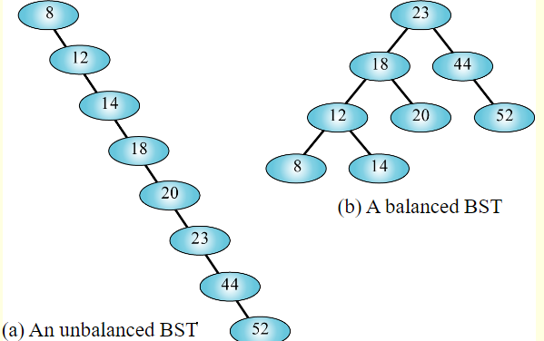
- The unbalanced BST is basically a linked list in tree clothing
- It takes 2 tests to located 12, 3 to locate 14, and 8 to locate 52
- Hence the search effort for this tree is O(N)
- We want to maintain balance in our BSTs
- AVL trees will help maintain balance
- Its definition is:
- A BST in which the heights of the subtrees of any given node, differ by no more than 1
- For EVERY node in a BST, you must check the height of the left and right subtree of that node
- If the height of those subtrees differ by no more than 1, then the BST is an AVL tree
- Thus, an AVL tree is a balanced BST
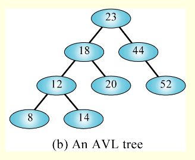
- This BST is an AVL Tree
- It takes 2 tests to locate 18, 3 to locate 12, and 4 to locate 8
- Hence, the search effort for this binary tree is O(log2n)
- For a tree with 1000 nodes, the worst case for a completely unbalanced tree is 1000 tests.
- Again, degenerating to a linked list
- However, the worst case for a balanced tree is 10 tests
AVL Trees: Formal Definiton:
- All empty trees are also, by definition, AVL trees
- If T is a non-empty BST with T_l and T_r as its left and right subtrees, respectively, then T is an AVL tree if an only if:
- T_l and T_r are also AVL trees
- |h_l - h_r| <= 1
(where hl and hr are the heights of Tl and Tr respectively)
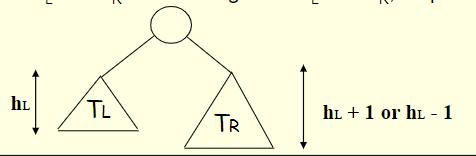
- All nodes in an AVL Tree have a balance factor (bf)
- Balance factor of a node = height of the left subtree minus the height of the right subtree
- An AVL tree can have only balance factors of -1,0, or 1 at every node
- The height of a subtree is basically how many connections it has
- If it has 0 connectons then its height is also 0
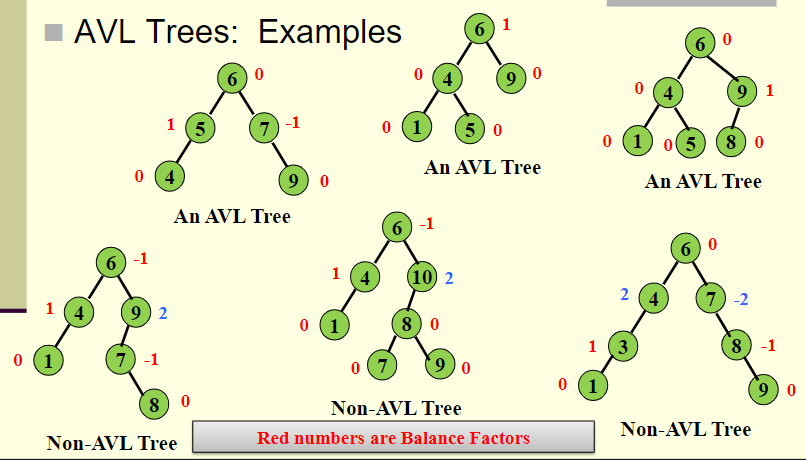
AVL Trees: Implementation
- To implement an AVL tree, simply associated a BF with each node, “x”
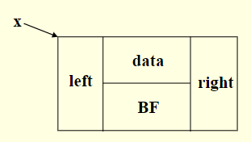
struct AVLTreeNode{
int data;
int BF;
struct AVLTreeNode *left;
struct AVLTreeNode *right;
}
In an AVL Tree, BF can be one of {-1,0,1}
Insertion
- Insertion may cause unbalancing in the tree
- When you insert into an AVL it will be the same as a BST
- Once the new node is inserted, the balance MUST be checked and restored if the tree has become unbalanced
- It often turns out that the new node can be inserted without affecting the height of the subtree
- If this happens, then the balance of the root will not be changed
- The only case that causes difficulty:
- Inserting a new node into a subtree of the root, which is taller than the other subtree, and the height of the taller subtree increases
- Thus, an AVL tree can become unbalanced due to an insertion in one of four ways:
- Inserting a new node into the right subtree of a right child
- Inserting a new node into the left subtree of a left child
- This is the symmetric case
- Inserting a new node into the left subtree of a right child
- Inserting a new node into the right subtree of a left child
- Inserting a new node may cause the BF of some node, on the path from the root to the insertion point, to become 2 or -2
- Solution:
- First insert the node following typical rules of a BST
- Then from that insertion point, BACK UP towards the root, updating the bfs of all node along the path to root
- If a node ends of with a BF of 2 or -2, you must adjust the tree by rotating around deepest such node
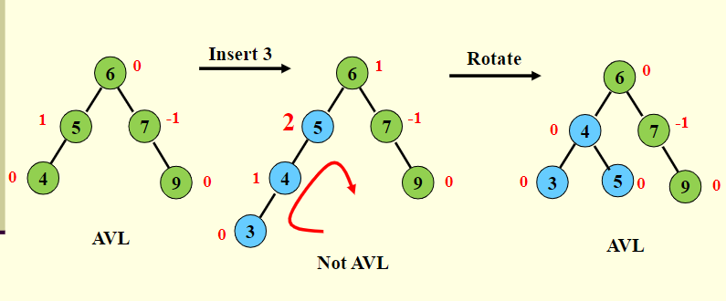
Summary
Insertion summary:
- We insert following standard rules of a BST
- Then we trace back up to the root of the tree
- As we back out of the tree, constantly check the balanace factor of earch node
- When a node is out of balance, we balance it and continue back up out of the tree
Arguments for using AVL Trees:
- Search/insertion/deletion is O(logn) since AVL trees are always balances
- The height balancing adds no more than a constant factor to the speed of insertion
Arguments against using AVL trees:
- Requires extra space for balancing factor
- It may be OK to have a partially balanced tree that would give performance similar to AVL trees without requiring the balancing factor
Insertion Revisited
There are 4 types of trees and this is how you can restructure
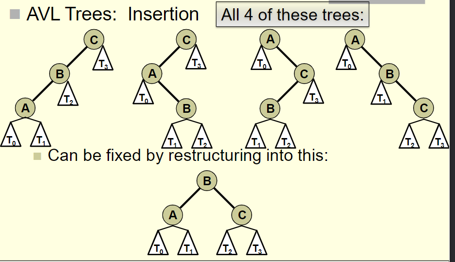
There are 4 insertion Scenarios
- Insertion into the left subtree of the left child of the root
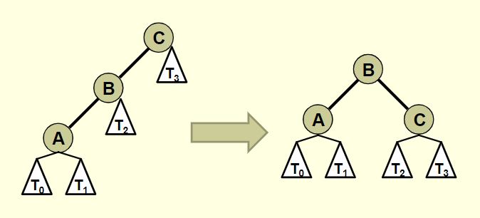
- Insertion into the right subtree of the left child of the root.
- This is a case where you have to use double rotations
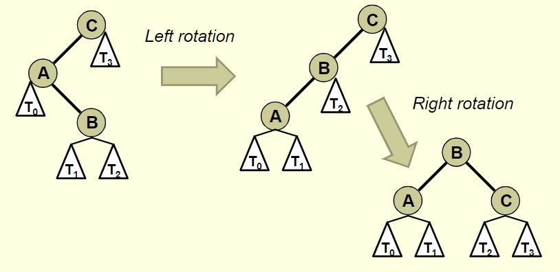
- Insertion into the left subtree of the right child of the root
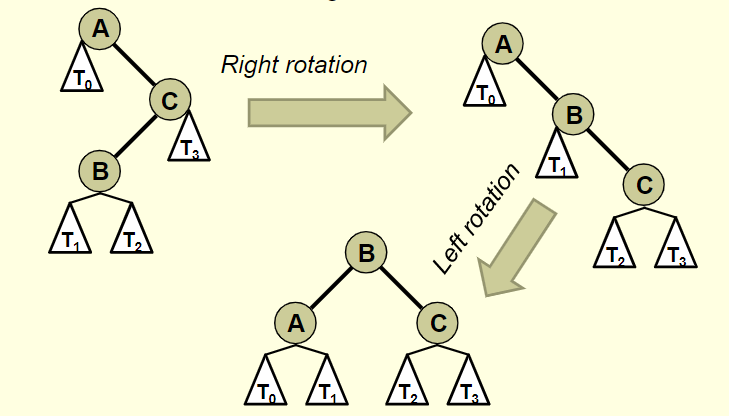
- Insertion into the right subtree of the right child of the root
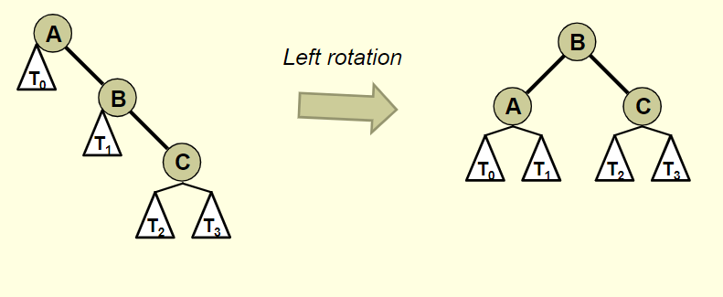
Practical rules for insertion and balancing:
- Insert a node following rules of BST insertion
- Once you insert a new node, perform the following
- Start finding the balance factors of ALL nodes along the path from the insertion point to the root
- As soon as you find the first node out of balance, mark that node as one of your three “restructuring nodes”
- Then, take two steps, back down, towards the insertion point and mark those two nodes as well
- Label those “A,B,C” nodes appropriately (and subtrees)
- Of the three nodes:
- The smallest node should be labeled ‘A’
- The middle node should be labeled ‘B’
- Last one is ‘C’
- Restructure those three nodes (and their subtrees)
Go to ipad notes for example